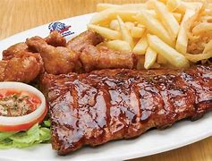

|
 |
 |
SPUR
Spur Steak Ranches Spur Corporation (doing business as Spur Steak Ranches) (JSE: SUR) is a steakhouse franchise restaurant chain originating from South Africa with a focus9 KB (702 words) - 18:49, 14 September 2020
Where will you find Spur Restaurant?
You will find the Spur restaurant all over around South Africa,more than 50 spur restaurant opened.